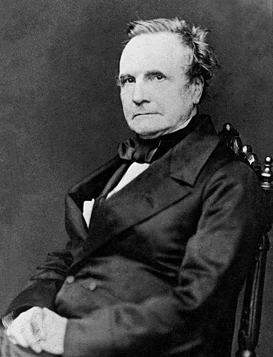

Charles Babbage
et la Machine analytique
1791 - 1871 Charles Babbage Charles Babbage (1791-1871) est un mathématicien, inventeur et ingénieur britannique, souvent considéré comme le "père de l'ordinateur". Bien qu'il n'ait jamais terminé la construction complète de cette machine de son vivant, ses idées ont profondément influencé le développement de l'informatique.
Contexte historique Au début du XIXe siècle, les calculs mathématiques étaient effectués manuellement, ce qui entraînait de nombreuses erreurs. Babbage, mathématicien britannique, avait déjà conçu la machine à différences pour automatiser ces calculs. Cependant, il envisagea une machine plus avancée : la machine analytique, capable de réaliser des opérations complexes et d'être programmée.